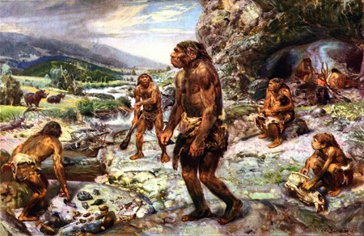

La prehistoria es el periodo de la vida humana anterior a los documentos escritos. Dicha época se conoce por vestigios como los instrumentos, las construcciones, las pinturas rupestres o los huesos. El término también se utiliza para nombrar al estudio de dicho periodo y a la obra que versa acerca de la época.
